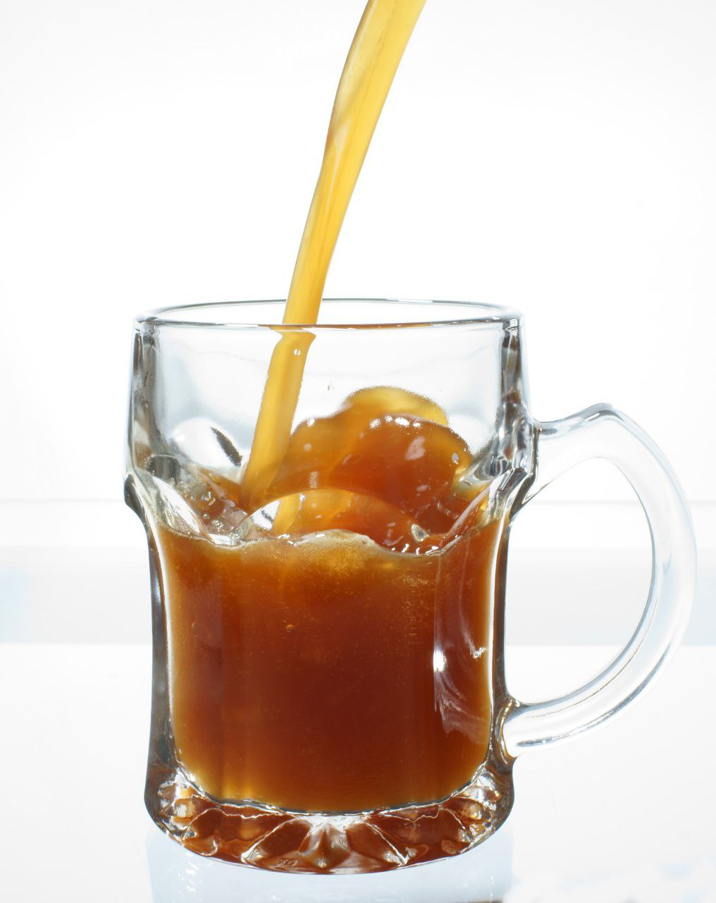

← 
Сiekawosсi:
Kwas to niesamowity wynalazek o tysiącletniej historii. Kwaśny napój pojawił się za czasów księcia Włodzimierza. Pierwsza wzmianka o nim pochodzi z 988 roku. Sto lat później ten napój chlebowy przygotowywano we wszystkich wioskach księstwa. Kwas, przygotowany według tradycyjnej receptury, na bazie kiełków zboża, nie tylko gasi pragnienie, ale także przynosi korzyści. W końcu przechowuje wszystkie witaminy i przydatne pierwiastki śladowe słodu. Mówią, że to dzięki temu napojowi zwykli ludzie w Rosji przetrwali głodne zimy.